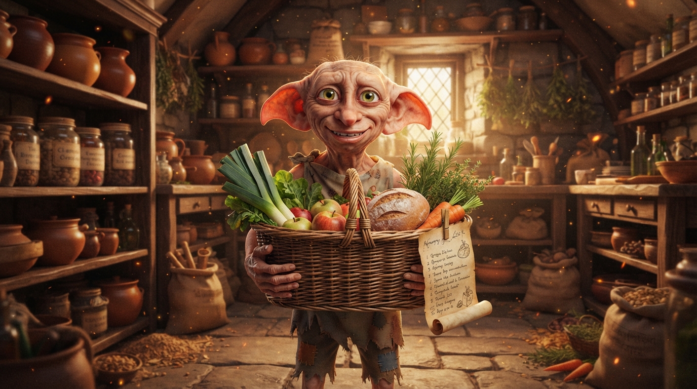

Potiron & Butternut
1 800 g
1 potiron + 1 courge
restaurant_menu Issu du menu (Gratin & Velouté)

« Dobby a préparé le grand panier des provisions ! Cochez vos trouvailles au fil des étals. »
local_convenience_store Mode marché & supermarché prêt pour les emplettes« En cas d'absence de réseau au supermarché, vos coches sont conservées et se synchroniseront dès le retour du signal. »
Sceau d'intégrité DOBBY — Vos coches et ajouts sont synchronisés localement sur cet appareil et avec les membres autorisés du foyer.